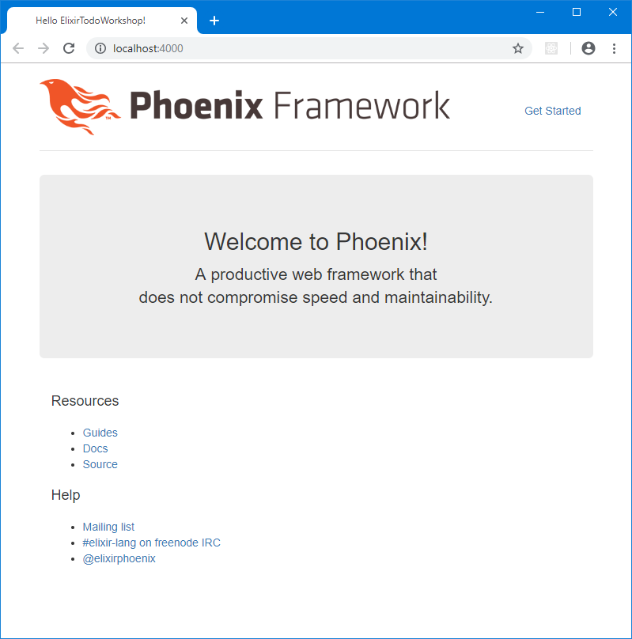

class: center, middle # Elixir/Phoenix workshop --- # Goal To bulid a simple TODO list web application with Elixir and Phoenix --- class: fontsize120 # Elixir Key language features * Python-like syntax * Functional programming * Everything is an expression * Few side-effects * Dynamic typing * Pattern matching * Meta programming Built on top of Erlang * Compiles to Erlang byte-code (BEAM) and runs on the Erlang virtual machine * Can use the Erlang standard library as well as third-party Erlang libraries/packages Erlang * General-purpose functional programming language * Developed by Ericsson * Focus on: Concurrency, fault tolerance, high availability, hot swapping, real-time computing --- # Example ```elixir defmodule Hello do def hello() do IO.puts("Hello World!") end end Hello.hello() ``` --- class: fontsize100 # Running an Elixir program REPL ```sh iex ``` Running a script file ```sh elixir program.exs ``` Running an application ```sh mix run ``` Running a Phoenix application ```sh mix phx.server ``` Connect to a running application ```sh iex -S mix ``` Running in production is a different story... --- # Phoenix * Phoenix is a framework for developing web applications with Elixir * Phoenix is based on the model-view-controller (MVC) methodology * HTML is generated on the server and sent to the client * Not much JavaScript --- # Setting up a new Phoenix app Phoenix provides a helper command which will generate the basic directory and file structure needed by a Phoenix app: ```sh mix phx.new ``` For this project I created the directory with a Git repository in advance so I had to use a slightly more complicated command: ```sh mix phx.new . --module ElixirTodoWorkshop --app elixir_todo_workshop ``` --- # Running Phoenix Use this command to start the Phoenix application you just created: ``` mix phx.server ``` Now you can visit the application at http://localhost:4000/: .center[] --- # TODO list application Will consist of two entities:  Phoenix also provide helper commands to generate the DB schema, models, controllers, views and HTML templates for these entities: ```sh mix phx.gen.html Todo List lists name:string ``` ```sh mix phx.gen.html Todo Item items description:string ``` --- # Elixir tooling * Mix: Elixir build tool * Rebar: Erlang build tool * Hex: Elixir/Erlang package manager (https://hex.pm/) * Distillery: Release build tool for Elixir * Edeliver: Deployment tool for Elixir and Erlang --- class: center, middle # The end ## Questions?